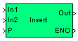

| MBDS Environment |
|
String Insert |
MATLAB Helpdesk |
General
Insert a string into another string.
Library
DescriptionMBDS Blockset

The string connected to input In2 is inserted in the string at input In1. Input P defines the position, after which In2 is inserted. Hence, In2 is inserted at position P + 1 of string In1. The first character is specified by position 1.
The block has an ENO (Error Number Output) output port to indicate an error. The ENO output is set to false in case of an error, otherwise it is set to true. The ENO output port can be hidden/shown via the parameter Show ENO port in the block mask.
For special values of P the block behaves as follows:
- If P exceeds the string length of In1, the ENO output is set to false. Nevertheless, the resulting string is calculated by combining string In2 after position P into string In1 and padding the gap with whitespaces.
- If P is zero the input string In2 is put in front of string In1. The ENO output is set to true.
- If P is negative the input string In2 without the first |P| characters is put in front of string In1. The ENO output is set to false.
Inputs and Outputs
Example
Port I/O Date Type Description In1
In
uint8 (N) String to be extended In2
In uint8 (N) String to be inserted in In1
P In Any integer P defines the position, after which In2 is inserted into In1 Out Out uint8 (N) Resulting string ENO Out boolean ENO is false (0) if an error has been occurred. If the block has been processed correctly the ENO Output is set to true (1).
Refer to the example.